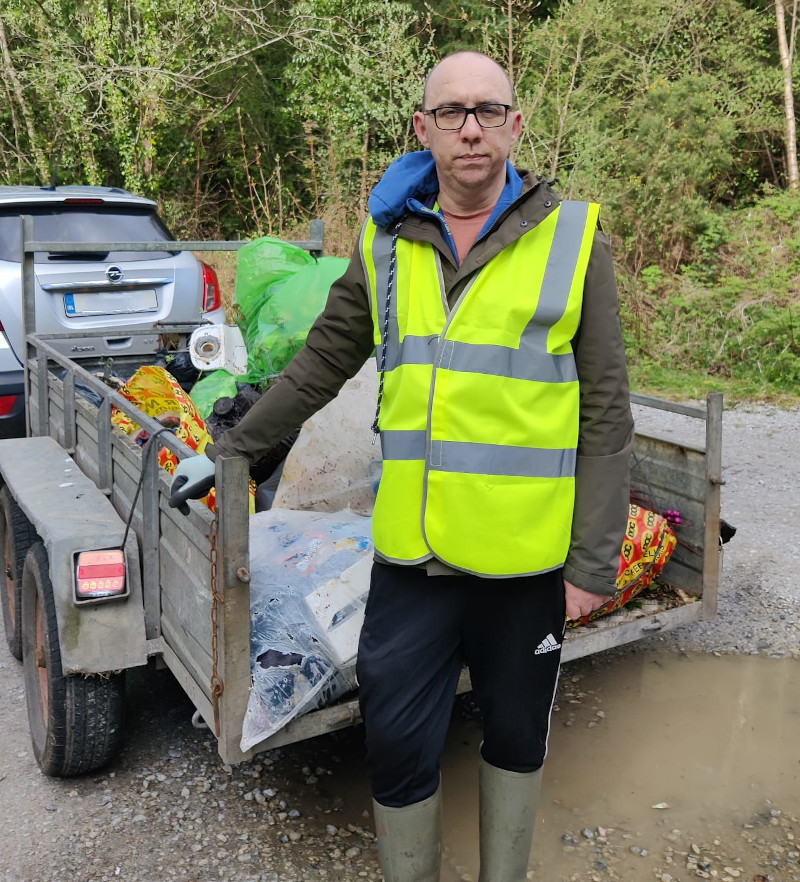

Eoin Madden, Green Party candidate in Oranmore-Athenry says he has been receiving many calls and emails regarding scandalous illegal dumping and pollution in general.
"Over the past few months, I’ve been contacted by numerous residents in Caherroyan who were living with foul smelling wastewater flowing into their estate. I contacted the county council Environment section and I identified the company who were working on a site nearby. There was a foul odour and grey water, from an adjacent site, which was seen pooling in the green area of the estate. Parents were telling their children not to play outside. The waste was also flowing along the tarmac, leaving its smell and grey residue in the parking area. It was most unpleasant for the residents to have to live with."
"I understand that the environment section of Galway
County Council have taken action in early May. The situation
is now much improved and the tarmac has been powerwashed".
"Similarly, I’ve been contacted by residents near
Claregalway who say heavy sludge, not ordinary farm slurry,
was spread some weeks ago on land near the River Clare. Any of
us living in the countryside are used to slurry being spread a
couple of times in a year. Its part of rural life. But this
sludge was something different. People are worried about the
health effects for those living close by, but also the effect
on the River Clare.
We want to build a river walk along River Clare, how can this work though if the river is treated almost like a sewer?"
"On a positive note, I’m happy to hear that two
fines, each for €150, were issued recently for dumping which
happened in Kiltullagh by persons from well outside the
area. I coordinated the recent Kiltullagh Killimordaly Spring
Clean, where with dozens of volunteers, we filled two skips
with litter. Much of my weekend was spent pulling plastic out
of ditches. Research from the UK shows plastic waste kills
thousands of hedgehogs every year, no doubt it is the same in
Ireland.
"
"The Green Party in Europe, particularly MEP Grace
O'Sullivan, is working hard to ban single use plastics at
source, but this courageous work is made difficult when the
might of the fossil fuel companies and plastics industry are
up against you. At home in Ireland, we’ve had the ban on
plastic bags and now the deposit return scheme. These
contribute to less plastic being produced over time."
"In the meantime, we need more support for local
communities trying to fight pollution and waste, and I think a
Green would help. We have no Green councillor elected in
Galway East, but I aim to change that."